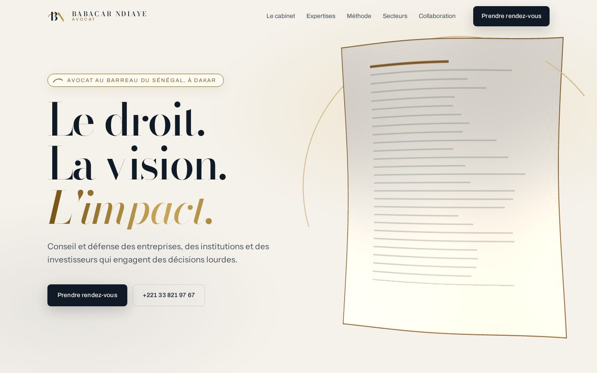

Direction 1
Sillage
L'ivoire du logo devient la surface entière. Une feuille suspendue, striée d'or, ondule au fil du scroll et se retire quand le texte prend la parole. Registre éditorial, lecture calme, autorité tranquille.
- Feuille 3D en nuance de papier, animée par un shader dédié
- Index dépliant des domaines, piste horizontale des secteurs
- Le registre le plus sobre des trois, idéal pour une clientèle institutionnelle
